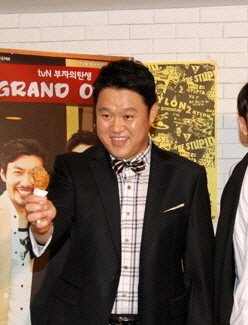

"결혼 준비하고 있어요." 이 말이 기사로 쏟아진 다음 날, 아버지 김구라에게서 나온 답은 "아직"이었어요. 그리 결혼 이야기는 이틀 사이 두 번 나왔어요. 날짜순으로 놓으면 지금 어디까지 왔는지 보여요.
📷 사진 1 자리
▲ 사진: acrofan.com / CC BY-SA 3.0 / 위키미디어 공용
11월 5일, 예능에서 나온 '결혼 준비'
처음은 E채널 '서인영의 유행꼰대'였어요. 그리는 여자친구를 만난 지 꽤 됐고, 군 복무 기간도 기다려 줬다며 결혼을 준비하고 있다고 말했어요. 이 대목이 '김구라 며느리 본다'는 제목으로 퍼졌죠.
같은 방송에서 그리는 해병대 복무 중 모은 2천만 원으로 차를 샀다는 이야기, 주식 최대 수익률이 300%였다는 이야기도 꺼냈어요. 결혼 발언은 이런 근황 토크 가운데 하나로 나온 말이었어요.
11월 6일, 아버지 매니저가 된 날 다시 나온 질문
다음 날 유튜브 채널 '김그리'에 새 콘텐츠 '그리가시지요' 첫 편이 올라왔어요. 그리가 하루 동안 아버지의 매니저를 맡는 설정이에요. 정작 운전대는 김구라가 잡았어요. 매니저가 있어도 늘 직접 운전한다며 아들을 뒷좌석에 앉혔죠.
차 안에서 김구라는 예전엔 하루 7~8개, 많게는 10개 프로그램을 했는데 이제는 피곤하다고 털어놨어요. 그리고 결혼 이야기가 나왔어요. 김구라는 요즘 "동현이 결혼해요?"라는 질문을 많이 받는다고 했어요. 여자친구를 만나 봤고 함께 여행도 갔지만, 나이를 생각하면 결혼은 아직이라는 입장이었어요.
두 말 사이의 거리
그리의 답은 한 발 물러나 있었어요. "결혼을 긍정적으로 생각하면서 만나고 있다"며 "제가 잘해야겠죠"라고 했거든요. 김구라도 최선을 다해 만나면 좋은 결과가 있을 거라고 받았어요.
두 날의 말을 나란히 놓으면 이렇게 정리돼요. 교제는 이어지고 있고 그리는 결혼을 염두에 두고 있어요. 다만 날짜나 예식 계획을 알린 결혼 발표는 아니에요. 그리가 말한 '준비'는 이튿날 그의 표현대로 '긍정적으로 생각하며 만나는 중'에 가까웠고, 아버지의 '아직'은 시기에 대한 말이었어요.
기사 제목만 보면 결혼이 코앞인 것 같지만, 이틀 치 발언을 붙여 보니 공식 발표라기보다 근황 토크에서 나온 말이었어요. 오히려 눈에 띈 건 그리가 아버지 매니저라는 새 콘텐츠를 연 쪽이에요. 결혼 질문도 그 첫 편의 한 대목으로 나왔고요.
✍️ 직접 보거나 들은 경험이 있으면 위 문단에 한두 줄 덧붙이세요 (이 안내 줄은 지우기)
그리 결혼은 '긍정적으로 생각하며 교제 중'인 단계이고, 정해진 날짜는 없어요. 그리의 근황은 E채널 '서인영의 유행꼰대'와 유튜브 '김그리' 채널의 '그리가시지요'에서 볼 수 있어요.
